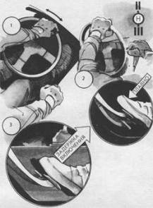

Сохранение устойчивости автомобиля
при переключении передач на скользкой дороге
На особенно скользкой дороге любое резкое действие водителя способно вызвать потерю устойчивости автомобиля – критический или ритмический занос, который, как правило, заканчивается неуправляемым вращением. Эти явления чаще всего возникают при повороте, на серии неровностей, на крутом спуске или при движении под уклон. Торможение как реакция на занос характерно для неопытных водителей и приводит к неуправляемому боковому или продольному скольжению, а затем к критическому заносу и интенсивному вращению автомобиля.
Для предотвращения потери устойчивости автомобиля необходим переход на низшие передачи, что обеспечивает сразу три преимущества. Во-первых, можно будет более мягко, чем тормозом, регулировать устойчивость автомобиля либо плавной тягой (при открытом дросселе), либо торможением двигателя, исключающим блокирование колес. Во-вторых, повысив тягу на ведущих колесах, можно регулировать угол заноса на автомобиле с задними ведущими колесами и угол сноса передней оси на передгеприводном автомобиле. В-третьих, создается запас мощности для преодоления критических ситуаций при вращении, сбрасывании автомобиля на снежную или мягкую грунтовую обочину и т. д.
Однако включить понижающую передачу или две подряд в ситуации, когда автомобиль “танцует” на дороге и вот-вот потеряет управляемость, задача серьезная даже для опытного водителя. Для неопытного водителя возникает парадоксальная альтернатива: переключишь передачу – потеряешь устойчивость автомобиля; не переключишь – не справишься с критической ситуацией.
Существует компромиссный вариант, позволяющий сохранить устойчивость при переходе на низшую передачу. Для этого при переключении необходимо смягчить момент включения понижающей передачи. Это достигается задержкой (пробуксовкой) сцепления, аналогичной ситуации при трогании на скользкой дороге. Время задержки должно соответствовать характеру ситуации и легко дозируется. В особо сложных ситуациях, например при переключении в процессе поворота на обледенелом покрытии, желательно сочетать “перегазовку” и задержку включения сцепления. Этим можно сохранить устойчивость автомобиля даже при переключении передачи с пропуском (например, IV–II или V–III). Техника выполнения приема показана на рисунке.
1. Освободить правую руку для переключения передач, продолжая стабилизировать рыскающий автомобиль одной (левой) рукой и не прекращая дросселирование. “Газ” может быть прикрыт, но не закрыт полностью.
2. Одновременно левая нога мягко и плавно выключает сцепление, а правая рука включает понижающую передачу с задержкой (двухмоментно: нейтральная – низшая.) Задержка включения позволяет поднять обороты двигателя (выполнить “перегазовку”) таким образом, чтобы после включения исключить разгонный или тормозной импульс на ведущих колесах.
3. Компенсировать возможную ошибку в точности “перегазовки” позволяет задержка включения сцепления. Особенно актуальна она в тех случаях, когда для “перегазовки” нет времени или необходимо включение понижающей передачи с пропуском одной или двух.

Приемы безопасности на очень скользкой дороге: задержка включения сцепления (“мягкое включение”); “перегазовка”, исключающая пробуксовку и блокирование; опережающая коррекция рулевым колесом, устраняющая рыскания автомобиля.
Так как на все перечисленные операции должно быть затрачено 0,5–0,8 (сек) с учетом задержек включения, “перегазовки” и компенсаторных действий рулевым колесом, для выполнения такого приема необходим высокий уровень автоматизма навыков.